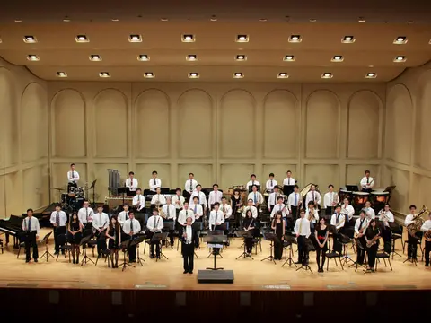

演出資訊
| 屆別 | 第 31 屆 |
|---|---|
| 年度 | 2015（民國 104 年） |
| 主題 | 《三生。一世樂》 |
| 日期 | 2015.09.05 |
| 時間 | 19:30 |
| 場地 | 嘉義市政府文化局音樂廳 |
| 指揮 | 鄭鈞元（指揮）、簡晟軒（指揮）、陳錫仁（指揮）、盧宓承（指揮） |
| 獨奏／協奏 | 陳韋希（薩克斯風／Andre Waignein: Deux Mouvements） |
| 籌辦字頭 | 待考 |
| 票務 | 票價 100 元；通路：兩廳院售票系統、ibon；三十年來首度嘗試售票演出 |
| 資料狀態 | 已確認 |
本頁基本欄位已有可考資料，仍會持續核對節目冊與校友補充。
關於這場音樂會
依演出企劃書前言記載，嘉中管樂隊自民國 74 年（1985）起延續舉辦校友暨在校生聯合音樂會，至 2015 年已「連續舉辦整整三十屆從未中斷」。第 31 屆的三大宗旨為：讓畢業隊友重溫高中時代情誼；藉正式音樂會之演出及排練，提升在校生的演奏及行政能力；並首次將第三項宗旨由「免費索票」改為「以售票入場方式，倡導管樂欣賞與正當休閒之風氣」——這項措辭上的改變，正對應著本屆音樂會售票制度的正式啟動。
依籌備會議紀錄，主辦校友於會中特別提及：「今年為三十屆以來第一次售票演出，意義重大，籌備上也需要比往年更加謹慎。」門票定價 100 元、以五折優惠（50 元）銷售，預計服務觀眾 800 人；同時，本屆也是校方「想要讓校聯恢復由在校生主導」的一屆，各股股長首度全數由在校生擔任，藉籌備過程完成新舊幹部交接與訓練。籌備期間每週日上午團練，演出前一週（8/31-9/4）晚間集訓，9 月 5 日當天下午裝台彩排、晚間正式演出。
指揮與獨奏

陳韋希
薩克斯風獨奏
依 2015 年演出企劃書記載，陳韋希取得法國國立聖康坦（Saint-Quentin）音樂院職業班薩克斯風演奏文憑，時為米特薩克斯風重奏團團員，本屆獨奏韋寧（Andre Waignein）薩克管協奏曲《兩個樂章》。
曲目
- 1812 序曲 The Year 1812, Festival Overture in E-flat major, Op. 49柴可夫斯基 Tchaikovsky
柴可夫斯基應指揮家尼可萊．魯賓斯坦之邀，於 1880 年為紀念俄國擊退拿破崙入侵而作，樂曲中引用法國國歌《馬賽曲》代表入侵的法軍，並穿插俄羅斯民謠與聖詠《天佑沙皇》主題，管弦樂版本更以真實砲聲與鐘聲作結；是柴可夫斯基流傳最廣、最具戲劇張力的作品之一，管樂團版本以定音鼓與大鼓等打擊效果重現原曲的磅礡氣勢。
- 兩個樂章（薩克管協奏曲） Deux Mouvements安德烈．韋寧 Andre Waignein（薩克斯風獨奏：陳韋希）
比利時作曲家韋寧應布魯塞爾皇家音樂院院長讓．貝里之邀，於 1989 年為該院薩克斯風班創作，並受薩克斯風教師阿蘭．克雷賓鼓勵完成。全曲分兩個樂章：第一樂章為悲歌（Elegie），旋律開闊抒情，賦予獨奏者充分的音樂自由；第二樂章隨想曲（Capriccio）則節奏多變、樂團伴奏份量吃重，獨奏者須以高音域的燦爛技巧為全曲畫下句點。
- 林肯郡花束 Lincolnshire Posy葛人傑 Percy Grainger
葛人傑應美國樂隊指揮協會之邀，於 1937 年完成這部管樂經典，全曲六個樂章均改編自他 1905-1906 年間親赴英格蘭林肯郡採集的民謠——葛人傑當年以愛迪生蠟筒錄音機記錄下每位民謠演唱者的原始唱腔，因此每個樂章都試圖呈現「歌者本人」的風格，而非單純的曲調改編。全曲於 1937 年由高德曼樂隊完整首演。
- 非洲交響曲 African Symphony范麥考伊曲，岩井直溥編 Van McCoy, arr. Naohiro Iwai
原曲由美國作曲家范麥考伊創作於迪斯可音樂盛行的年代，經有「日本吹奏樂波普之父」之稱的岩井直溥改編後，成為日本學生管樂團最廣為演出的通俗曲目之一，也是《New Sounds in Brass》系列的代表作品。
- 八木節 Yagibushi日本民謠，岩井直溥編 arr. Naohiro Iwai
源自日本栃木、群馬地區的傳統民謠，經岩井直溥改編為管樂團版本，節奏明快、帶有濃厚的日本鄉土色彩，是其改編之日本民謠代表作之一。
- 真善美選粹 Selections from The Sound of Music羅傑斯與漢默斯坦
改編自 1959 年百老匯音樂劇《真善美》，由理查．羅傑斯作曲、奧斯卡．漢默斯坦二世作詞，1965 年電影版更由茱莉．安德魯絲主演並風靡全球；本曲選粹集結劇中多首膾炙人口的旋律，是管樂團音樂會的常見曲目。
- 美國風情畫 15 American Graffiti XV岩井直溥編 arr. Naohiro Iwai
岩井直溥自 1970 年代起於《New Sounds in Brass》系列推出的長銷組曲，全系列共 23 部作品，以組曲形式串聯多首美國經典流行與電影歌曲；第 15 集取材自美國電影協會（AFI）於 2004 年紀念美國電影百年所公布的「百大電影歌曲」名單，是該系列中具代表性的一集。
- 伊帕內馬女孩 The Girl from Ipanema裘賓曲，岩井直溥編 Antonio Carlos Jobim, arr. Naohiro Iwai
由巴西作曲家裘賓與詩人德莫拉埃斯創作於 1962 年，是巴薩諾瓦（Bossa Nova）曲風最具代表性的名曲之一，1964 年史坦．蓋茲與雅斯楚．吉爾貝托的錄音版本更使其風靡全球；經岩井直溥改編後，成為管樂團經典的拉丁抒情曲目。
- 唱！唱！唱！ Sing Sing Sing普利馬曲，岩井直溥編 Louis Prima, arr. Naohiro Iwai
路易．普利馬創作於 1936 年的搖擺爵士名曲，因班尼．古德曼樂團 1937 年卡內基音樂廳的傳奇演出、鼓手金恩．克魯帕的招牌鼓點而聲名大噪；本屆演出岩井直溥改編的管樂團版本，作為下半場壓軸曲目。
曲目整理自 2015 年演出企劃書附件一與正式海報；下半場 4-9 曲為「岩井直溥特集」。主辦單位保留曲目更動之權利，樂曲背景資料另參考網路公開資料。
若尚未顯示上下半場或完整曲序，表示目前資料尚不足以確認正式節目順序；後續會依節目冊與校友補充資料校對。
演出人員名單
| 聲部／角色 | 人員 |
|---|---|
| 長笛 | 7111 盧宓承、9311 蔡沛霖、9611 張容慈、0001 陳政宏、0011 周億琳 |
| 雙簧管 | 8912 黃耀瑩 |
| 巴松管 | 8711 劉怡汝 |
| 單簧管 | 7222 李吉峯、7921 莊富益、8603 江俊漢、8621 蔡嘉偉、8722 張羽嫻、8921 洪瑋辰、8922 陳正龍、9122 吳瑩娟、9321 吳宜靜、9721 葉哲良、9802 李亞璿、9902 趙耘浩、9921 劉炫廷 |
| 薩克斯風 | 8431 鄭鈞元、8632 江嘉榮、8832 陳韋志、9132 陳韋希（獨奏）、9331 郭軒竑 |
| 法國號 | 7503 蔡文立、8841 魏仕杰、9302 洪敏睿、9801 高士涵、9841 洪筱涵 |
| 小號 | 7571 陳昌遠、8401 楊秉驊、8601 古峻錡、8651 劉全盛、9202 蔡淳任、9451 蔡育修、9903 陳信慈 |
| 長號 | 7901 高健雄、8301 高崇文、8861 簡晟軒、9261 方崇任、9601 張永澤、9661 謝梓嫣、9701 蔡政岳、0002 王則旻 |
| 上低音號 | 6801 游宗仁、8671 吳仁庭 |
| 低音號 | 7581 翁啟榮、8501 丁肇賢、9702 李旻其 |
| 打擊 | 8193 李瑾佑、8302 鄧杰翔、8991 陳英杰、9392 林祐成、9895 詹琬婷、0091 王耀德 |
依 2015 年演出企劃書記載，全體演出人員（含編號）如下。企劃書原文註明「篇幅所限，以下僅列出部分團員」，全團演出規模約 70 人；本表為企劃書中留有編號紀錄之演出者，歡迎校友協助勘誤補充。
幕後行政團隊
| 職務 | 人員 | 職掌 |
|---|---|---|
| 團長 | 6401 馮朝君 | 統整團務與演出行政事務 |
| 音樂會總籌 | 8841 魏仕杰 | 專責籌劃本屆聯演所有相關事宜 |
| 文書 | 8481 羅碩文 | 節目單撰寫、文書庶務處理 |
| 財務 | 8802 劉議謙 | 處理各項收支、記帳並徵信 |
| 譜務 | 7962 范庭福 | 準備演出與排練所需之所有樂譜 |
| 美宣 | 9721 葉哲良 | 海報、節目單封面設計與宣傳 |
| 舞台監督 | 9202 蔡淳任 | 控制演出當天流程，與音樂廳館方接洽舞台事宜 |
依籌備會議紀錄，本屆另設有在校生擔任的總籌、助理指揮、文書、財務、器管、譜務、宣傳票務、人事、公關等股，藉籌辦過程完成新舊幹部交接與訓練。
贊助與致謝
指導單位為嘉義市政府文化局；協辦單位為國立嘉義高中、國立嘉義高中校友會、嘉義高中管樂隊、嘉義市管樂團；贊助單位為嘉義高中家長會、雙燕樂器、藝研樂器。
演出留影

節目冊
目前尚未整理到可公開呈現的完整節目冊掃描圖檔。
影片連結
相關文章
目前尚無已整理的相關文章。
資料補充
本頁場地、曲目與演出人員資訊整理自 2015 年演出企劃書、籌備會議記錄、正式海報與售票文件（校友留存資料）；樂曲背景另參考公開音樂資料。如需更正或補充演出照片，歡迎透過粉絲專頁與我們聯繫。
基本欄位已有可考資料，仍會持續核對節目冊與校友補充。